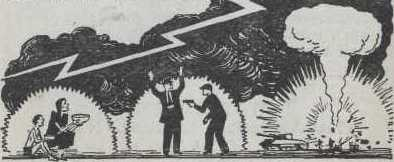
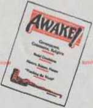

Is today’s world awake?
Or is it asleep to the most vital news? Critical times need your notice!
It has become a byword to say. "It Is later than you think!” But bywords are too often shoved aside or taken for granted. It becomes too easy therefore to laugh off a weighty truth. Our times are generously heaped with scoffers anxious to ignore critical conditions. They feed on propaganda aimed at proving the permanency of man's rule. International crises are disregarded; moral collapse is passed with a wink. But nineteen centuries ago a warning was sounded against such sleepy attitude.* "You know the season, that It is already the hour for you to awake from sleep, for now our salvation is nearer than at the time when we became believers." The writer was the inspired apostle Paul: the citation Is recorded In the Bible, at Romans 13:11.
Showing that he had In mind a time future from the date of writing, the same apostle wrote to the young Christian overseer, Timothy: "But know this, that in the last days critical times hard to deal with will be here, for men will be lovers of themselves, lovers of money, self-assuming, haughty, blasphemers. disobedient to parents, without gratitude, with no loving-kindness, having no natural affection, not open to any agreement, slanderers, without selfcontrol, fierce, without love of goodness, betrayers, headstrong, puffed up with self-esteem, lovers of pleasures rather than lovers of God. having a form of godly devotion but proving false to Its power; and from these turn away."—2 Timothy 3:1-5.
Even the most careless glance at current newspapers convinces that the multiplied recurrence of these acts of violence against a background of world upheaval has caught up with our times. None who have lived through the period will deny the sweeping changes overtaking human society since the out-
2 break of World War I In 1914. Along with total war. food shortages and pestilence lilt panic proportions: and the trembling earth shook literally In the throes of mighty 'quakes. While such surface violence multiplied from 1918 until 1939. men paid Up service to peace while preparing tor war. Then the holocaust exploded that was destined to dwarf even World War I. Its aftereffects have affected man's whole life.
Have these events found you fast asleep or on the alert? Furthermore, when the offspring of World War I. the League of Nations, died under the guns of World War II, were you shaken? Now that Its successor, the U. N.. has plunged madly to the brink of a yet uncertain cataclysm, do you hear the alarm ? When you read of murders without motive, ot untamed juvenile delinquency, even unnatural hatred of children for parents, of sexual Immorality and perversion In floodUke proportions, does It stir you? When crime probes unveil trusted political heads as base, conniving criminals: when bribery Is found corrupting college youths, do you wince? Are you moved, excited, awake to the significance of these things? Or do you sleep on. gripped by the sedatives of propaganda for a fairer tomorrow ?
Religious organizations seek to quiet fears. But their own |>< litical aflllia-
Hons. sectarian confusion,
' Bible Ignorance and spiritual lethargy convict them I before they get started. Then science rushes to the । rescue, offering the atomic bomb as the weapon to I make war unthinkable. Instead, it makes It all but unavoidable and "peace'' unbearable. Similar attempts to quiet the restless sleepers come from the schools, the newspapers, newsreels, radio and television.
World news agencies are good reporters. An event occurs In a remote corner of the globe. In seconds It Is on the wire: in minutes it is International news, and an hour can see it in print. But these sources choose to Ignore news of modern significance from God's Word. Concerning the “last days” of violence. Jesus Christ told his disciples to look for nation and kingdom rising against one another, food shortages, pestilence, earthquakes, global political organizations and wide-spread fear along with the announcement of God’s established kingdom.—Matthew 24: Mark 13: Luke 21.
Rose-colored propaganda, ignoring these facts while consoling human schemes, forwards the blindness about which Paul warned: "If, now, the good news we declare Is in fact veiled. It is veiled among those who are perishing, among whom the god of this system of things has blinded the minds of the unbelievers, that the Illumination of the glorious good news about Christ, who Is the image of God. might not shine through."—2 Corinthians 4:3, 4.
Concerning his second presence. Jesus used a similar comparison to literal light: "For Just as the lightning comes out of eastern parts and shines over to western parts, so the presence of the Son of man will be.” (Matthew 24:27) The light of his second presence Is not kept secret for only a few, but as lightning is seen by all. so the message of his Invisible second presence Is declared to enlighten men 4
of all nations. World events make up a part of the visible sign of his presence. But scoffers still bleat that ’history is only repeating Itself, and never .do see the light. Referring to those In his day that heard and refused to believe, then contrasting them with his true disciples, the Master said:
"This is why I speak to them by the use of illustrations, because, looking, they look in vain, and hearing, they hear in vain, neither do they get the sense of it . . . However, happy are your eyes because they behold, and your ears because they hear. For I truly say to you, Many prophets and righteous men desired to see the things you are beholding and did not see them, and to hear the things you are hearing and did not hear them."'—Matthew 13:13-17.
Now the facts can be matched to prove the truly significant news of this age. that the Lord has been enthroned, that he reigns! To appreciate this, the ears must be kept tuned to properly understand. This great truth must be segregated from the tides of propaganda that flood the world. The eyes must be sharp and alert, anxious to scan the pages of God’s Word, to compare, thus to recognize fulfillment of vital prophecies when world events unfold them before us in these unparalleled times.
Now, Indeed, It Is 'later than you think’ I It Is much later In this world’s allotted lifetime than it dares realize. Such Is the proper conclusion to draw from comparison of the foretold sign with modern news reports. It is a sure sign of finish to the old system of things that cries peace, but is stricken with wars, professes godliness, yet reeks with immorality, boasts of wakefulness while it Is sound asleep. Observe all these world happenings, then, "as these things start to occur, raise yourselves erect and lift your heads up. because your deliverance is getting near." (Luke 21:28) So sleep no longer, but rejoice that 'it is already the hour to awake from sleep', and to likewise alert others. Jehovah God’s 5 kingdom by Jesus Christ Is destined to end man's every affliction and woe. Extension of its power to the earth Inside this generation will be the greatest blessing In man's history. Already It is his most thrilling news. Learn this good news and be truly awake to the times!
Scrlplirti qioted Iwrtln art from th* “Amcrlcui Standard Vtr-»lon" or the “Hew World Tranilatlon ol the Christian Greet Serlptoree’’
The semimonthly, 32-page news magazine Awake.' accurately reports on global affairs and matters of broadest Interest. It employs neither commercial advertising, censorship nor propaganda. Awake’s conclusions are honest, up-to-date and hopeful because critical modern times are viewed with the Bible's description - of these days In mind It finds welcome tn homes and offices world-wide. In numerous languages. The subscription rate Is $1.00 a | year, twenty-four copies. Send your subscription to the address below.
6
T4 ”